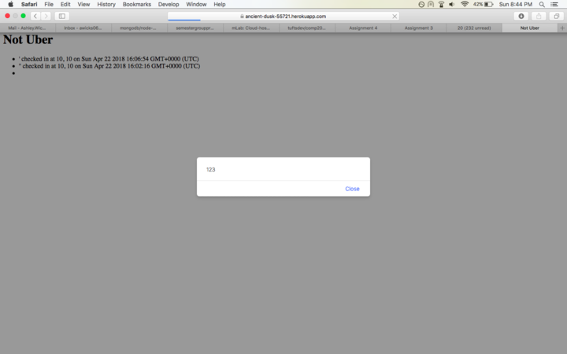
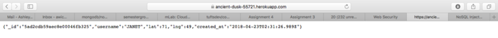
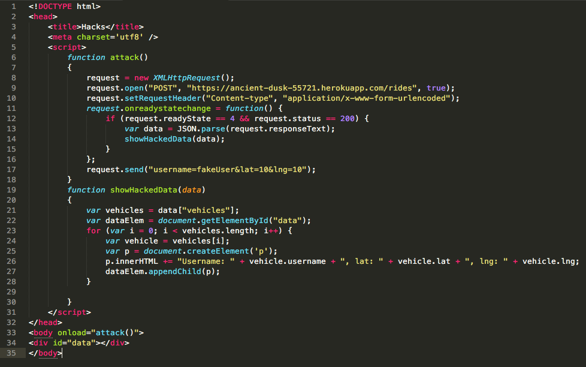
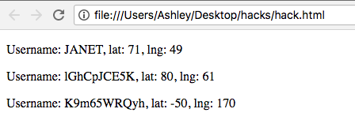

I have been hired as a security consultant to document privacy and security vulnerabilities in a web application, on both the client side and the server side. This application allows passengers and vehicles to request a ride or look for passengers, respectively, by sending information to a server about their coordinates. The server sends back information about either vehicles or passengers, which is rendered on a map for the client.
I first conducted "black box testing", meaning that I attempted attacks on the application without reviewing the source code. For example, I used the /rides POST API with curl to insert a malicious script into the application.
Next, I conducted "white box testing", meaning that I read the source code and looked for vulnerabilities in the code. For example, after looking at the server code in index.js, I suspected that I could use database injection to access user information, since user input was not sanitized.
The tool that I used most for this security assessment was curl, to post data to the server using the "/rides" API. I also wrote some of my own code, pictured below, to expose other vulnerabilities.
This application was found to have many security and privacy vulnerabilities. The server blindly trusts all user input, and does not protect against user input which could contain, for example, malicious code that could be executed when certain sections of the application. It is possible for anyone from any domain, without knowledge of any username, to access all data about vehicles on this site, including location. This is a major privacy issue, and this application should increase its security to hide private user information.
Cross-site scripting for "/" GET route
This issue was found when visiting https://ancient-dusk-55721.herokuapp.com/ on a browser using the "/" GET route, after injecting a script into the database of passengers using the "/rides" POST route, and then
The severity of this issue is high. A cross-site scripting attack has the ability to present users with fraudulent web content, steal cookie information, and inject malicious code into web pages. This is a very common vulnerability which is important to protect against when designing web applications.
I found this issue by navigating to the directory of the server in a terminal and executing this command:
curl --data "username='<script>alert(123)</script>'&lat=10&lng=10" https://ancient-dusk-55721.herokuapp.com/rides"
This command sends data to the server which contains a malicious script, which is then injected into the database. When a user uses the "/" GET route to view passengers who have requested a ride, the script is injected into the HTML and is executed.
Here is an screenshot of the site https://ancient-dusk-55721.herokuapp.com/, after a script was injected.
One good way to protect against a cross-site scripting attack is to remove all special characters from user input. It is very important to never trust user input! Another way is to change "<" to "lt" and to change ">" to "gt", so that no script\ tags remain.
Database injection with MongoDB
This issue was found using the "/vehicle.json" GET route.
The severity of this issue is high. By injecting Mongo queries into the parameters of a request, hackers could access information about users, including their location. This is an issue of privacy, since the location of users should be kept hidden.
I found this issue by inserting private user information into the database using the "/rides" POST route with curl, and then going to the URL https://ancient-dusk-55721.herokuapp.com/vehicle.json?username[$ne]=null&lat=10&lng=10/ in a web browser. Here is an screenshot of the address bar:
Here is an screenshot of the site https://ancient-dusk-55721.herokuapp.com/vehicle.json?username[$ne]=null&lat=10&lng=10/, which shows sensitive user information:
The best way to prevent against database injection is simply by sanitizing user input, such as stripping all special characters or any keys that contain "$" in the input.
Bad programming practice: CORS enabled with wildcard
This issue was found using the "/rides" POST route.
The severity of this issue is high. Since cross-origin resource sharing (CORS) in enabled for the POST route, any domain can access private user information, including username and location. (For example, read Vulnerability Allowed Hackers to Read Private Facebook Conversations ).
I found this issue by writing a separate HTML file, which could have been written by anyone with malicious intent. This HTML file sends a POST request to the server with a fake username, which then returns data about all vehicle users, which I then displayed on the page. Here is the code that I used to perform this attack:
Here is an screenshot of the site hacks.html which I coded, which shows sensitive user information for vehicles:
It is usually very bad practice to use CORS with a wildcard (*). CORS should be enabled only for trusted domains, except for open data situations. Thus, CORS should be disabled on the server side for all unknown sites, since user data should be kept private. At the very least, the server should verify that the given username is in a list of known usernames for the site.
This report underlines a few major security and privacy vulnerabilities of this site. All of the resolutions recommended above should be followed to hide sensitive user information and to protect against malicious attacks. These are all quick fixes, about one line of code for each. After these fundamental issues have been addressed, the application should undergo a more thorough security assessment. Tools like Burp Suite can be used as a scanner and proxy. The community edition is free, while the professional edition costs $349 per year. Many tools also offer a spidering tool. Scanners can scan entire pages for potential vulnerabilities. More generally, it is good to be aware of the OWASP Top Ten, a list of some of the most common and critical security risks for applications.
Here is a list of references that I have used to complete this project: